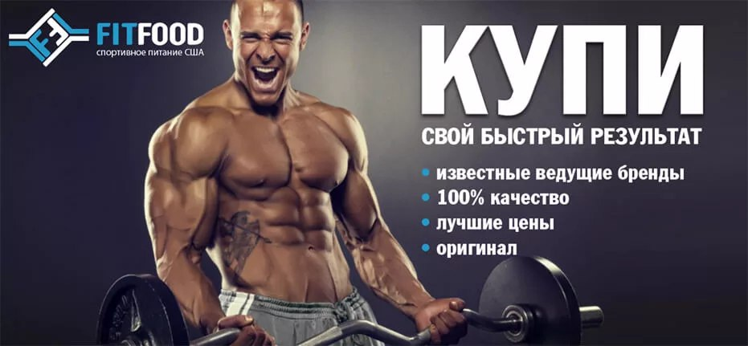

Добро пожаловать на наш сайт о спортивном питании!
Спортивное питание – это важная составляющая для достижения высоких результатов в спорте. На нашем сайте вы найдете информацию о различных продуктах, их преимуществах и рекомендациях по применению.
